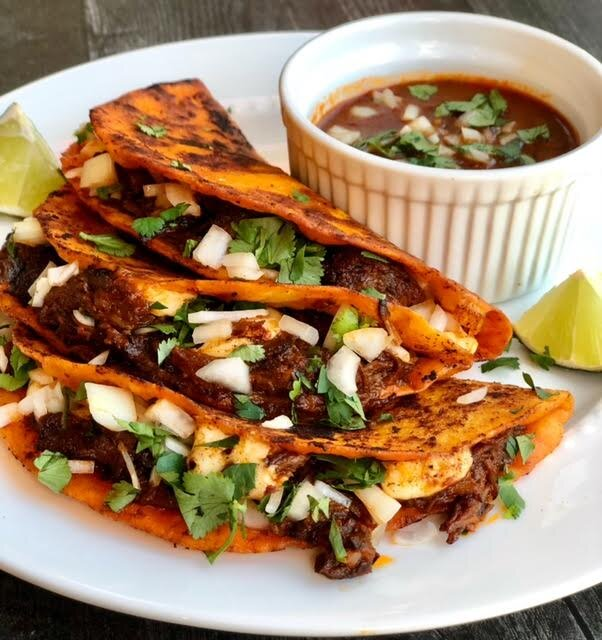

Birria Taco

A classic Birria Taco recipe from the streets of Mexico with a great spice and juicy, cheesy combo!
- Tortilla
- Hot Peppers
- Beef Chuck
- Oaxaca Cheese
- Stock, Cilantro, Onions
Steps
- Fry onions with tomato paste and the peppers, and stock
- Blend, then add your seared beef chuck
- Cook for long hours, then shred meat
- Toast tortilla with consome, the meat, and cheese, and serve with more consome!